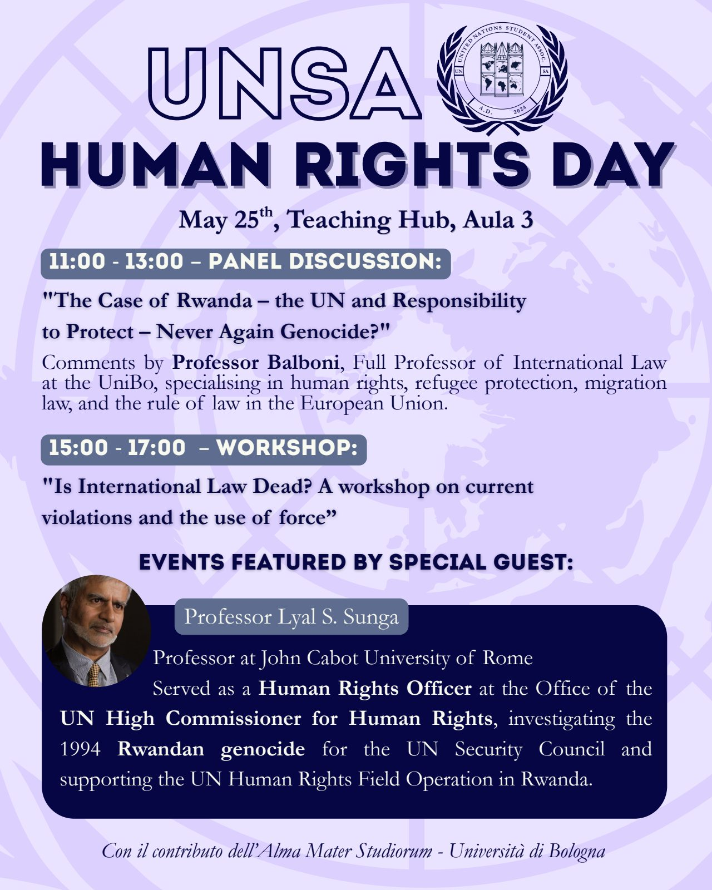
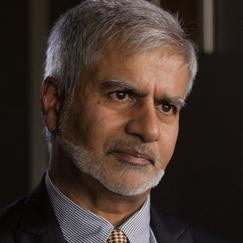

May2026

Workshop · Human Rights Day
Is International Law Dead?
Current Violations and the Use of Force
An interactive workshop on the challenges facing international law today — human rights violations, armed conflicts and the use of force — closing with a debate on the future and relevance of international law. It followed the morning panel on the case of Rwanda.
- Date
- 25 May 2026, 15:00–18:00
- Venue
- Aula 3, Teaching Hub
- Support
- With the contribution of the University of Bologna

Prof. Lyal S. SungaJohn Cabot University of Rome; former Human Rights Officer at the UN OHCHR